모모커피 사장님은 5년째 같은 자리에서 같은 메뉴를 팝니다. 단골은 있지만 매출은 몇 달째 제자리. 새 아이디어를 내려고 해도 “뭘 해야 하지?”에서 머리가 멈춥니다.
왜 막힐까? 아이디어가 없어서가 아니라 같은 방향으로만 생각해서입니다. “메뉴를 더 늘릴까?” 한 가지 방향만 돌고 있죠. 필요한 건 생각의 방향을 강제로 바꿔주는 질문 7개 — 그게 SCAMPER입니다.
😵 막막함
“뭐부터 생각하지?”
🔁 같은 생각 반복
메뉴 늘리기, 할인하기, 또 할인…
🗂 정리 불가
메모장에 흩어진 생각들
💡 이 튜토리얼의 모모커피·보라꽃방 등은 설명을 위한 가상 사례입니다. 숫자·효과는 실제 성과가 아니라 ‘예시 점수’이며, 사장님 가게에 맞게 직접 바꿔 쓰세요.
CHAPTER 1 · 도구 이해
SCAMPER = 질문 7개짜리 돋보기
내 가게를 7개의 돋보기로 차례로 비춰보세요. 아래 카드의 질문을 그대로 가게 이름과 붙여 읽으면 됩니다.
S
대체Substitute
무엇을 바꿔치울까?
종이 쿠폰 → 카카오톡 스탬프 현장 판매 → 정기 구독
C
결합Combine
무엇과 합칠까?
원두 + 드립백 선물세트 카페 + 옆 빵집 모닝세트
A
응용Adapt
무엇을 응용·차용할까?
호텔 조식 트레이 → 주말 브런치 피트니스 횟수권 → 관리권
M
수정·확대Modify/Magnify
바꾸거나 키우면?
점보 사이즈 신설 3,000원 미니 입문 상품
P
전용Put to other use
다른 쓰임새는?
한가한 오후 홀 → 스터디룸 대관 커피박 → 방향제 굿즈
E
제거·축소Eliminate
무엇을 뺄까?
메뉴 8개로 축소 서빙 없이 셀프 픽업
R
역전·재배열Reverse/Rearrange
뒤집거나 재배열하면?
낮엔 카페, 밤엔 바 · 손님이 메뉴를 만든다 · 입구에 디저트를 먼저 보이게
그런데 종이에 7칸을 그려서 쓰면 금방 지저분해집니다. 그래서 ‘씽킹 매트릭스’ 웹페이지를 씁니다. 설치도 회원가입도 없이, 열자마자 쓸 수 있어요.
CHAPTER 2 · 화면 둘러보기
화면은 딱 5곳만 보면 됩니다
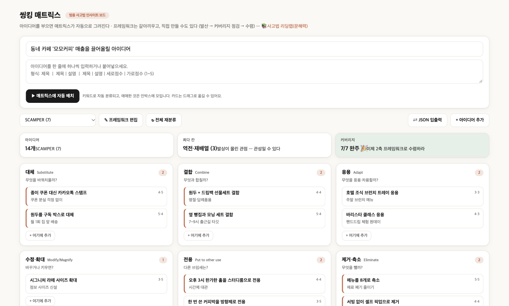
12345
실제 화면 캡처. 번호가 깜빡이는 곳을 순서대로 보세요.
1주제 — 오늘 풀 문제 한 줄. (예: 매출 올리기)
2아이디어 상자 — 한 줄에 하나씩 붙여넣기
3▶ 자동 배치 — 키워드로 7칸에 분류
4프레임워크 선택 — SCAMPER ↔ 2축 표 등 틀 교체
5현황 카드 — 개수 · 최다 칸 · 커버리지
🧭 드롭다운에는 오스본 체크리스트(9렌즈) · SCAMPER(7) · 식스햇 · 효과×실현 가능성 · 중요도×긴급도 · 커스텀이 들어 있습니다. 이 튜토리얼은 SCAMPER(발산) → 2축(수렴) 순서로 씁니다.
STEP 1 · 발산
머릿속 아이디어를 한 줄씩 붓는다
정리하려 하지 마세요. 렌즈를 떠올리며 떠오르는 대로, 한 줄에 하나. 점수는 나중에 매겨도 됩니다.
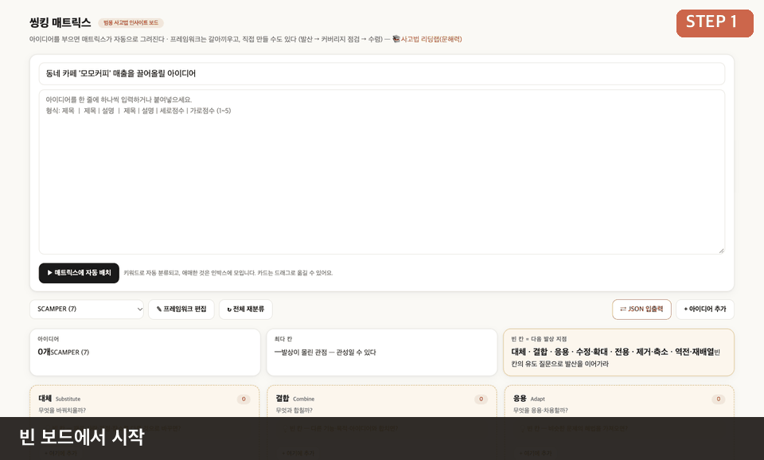
▲ 모모커피 사장님의 14줄 입력 → ▶ 자동 배치 (실제 화면을 프레임별로 캡처한 GIF)
입력 형식 — 구분자는 | 하나
제목 | 설명 | 세로점수(효과) | 가로점수(실현성)
종이 쿠폰 대신 카카오톡 스탬프 | 쿠폰 분실 걱정 없이 | 4 | 5
원두를 구독 박스로 대체 | 월 1회 집 앞 배송 | 5 | 4
오후 3시 한가한 홀을 스터디룸으로 전용 | 시간제 대관 | 4 | 4
✅ 이렇게 쓰면 잘 분류돼요
제목에 렌즈 단어(대체·결합·응용·확대·전용·축소·제거·역전…)를 넣으면 자동으로 해당 칸에 들어갑니다.
🎯 점수는 대충이라도 OK
세로=효과(매출·단골에 얼마나 도움?), 가로=실현성(내가 이번 달에 할 수 있나?). 1~5점. 안 쓰면 기본 3점.
TIP
막히면 칸의 ‘유도 질문’을 읽으세요. 빈 칸에는 “💡 빈 칸 — 다른 시장·사용자·상황에서 쓰면?” 같은 힌트가 자동으로 뜹니다. 7칸을 질문 삼아 돌기만 해도 14개는 금방 나옵니다.
STEP 2 · 자동 배치와 보정
자동 분류는 ‘초안’, 최종 판단은 사장님
▶ 버튼을 누르면 보드가 순식간에 채워집니다. 그런데 모모커피 사장님의 보드를 보니 이상한 점이 있었어요.
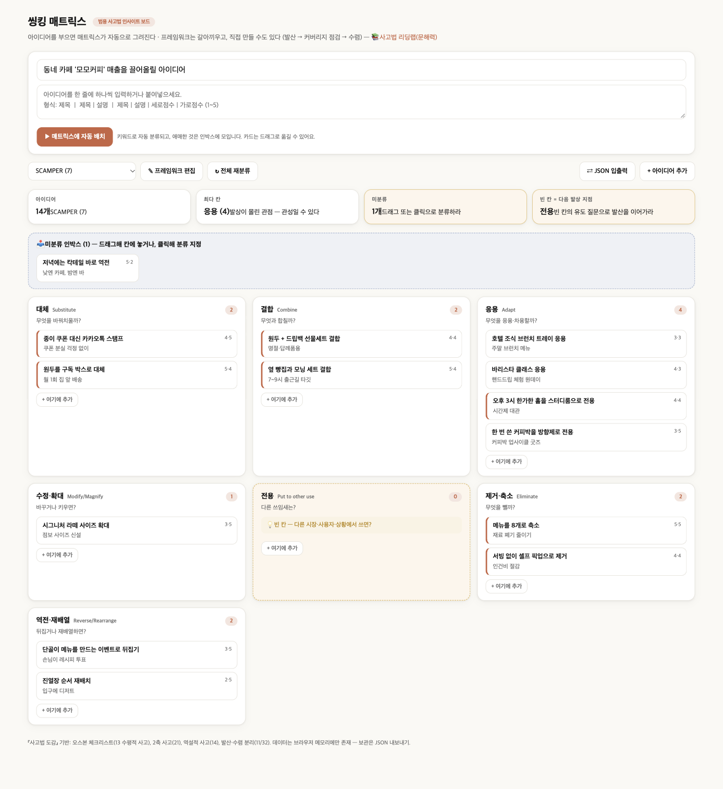
자동 배치 직후. ‘스터디룸으로 전용’, ‘커피박을 방향제로 전용’ 카드가 응용 칸에 들어갔고, 전용 칸은 0개(점선 + 노란 표시). 맨 위 미분류 인박스엔 ‘칵테일 바로 역전’ 1개.
사장님의 한마디 “오, 기계가 완벽하진 않네. 근데 어디가 비었는지 한눈에 보이니까 오히려 좋다.” — 자동 분류의 진짜 가치는 정답이 아니라 빈 칸을 보여주는 것입니다.
보정 방법 ① 드래그해서 옮기기
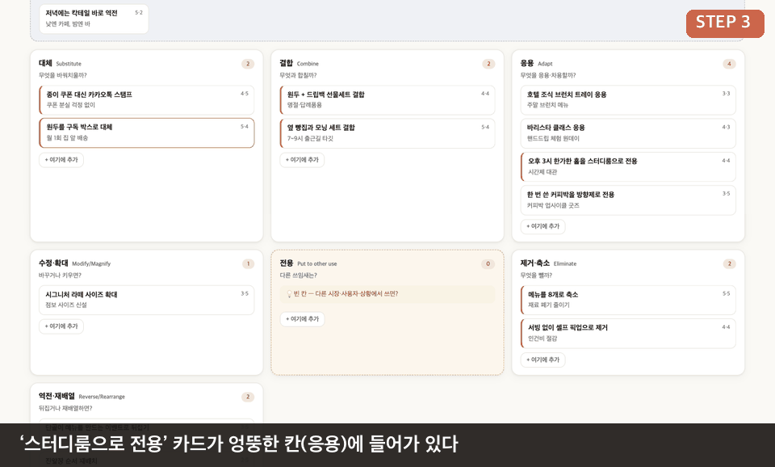
▲ 카드를 잡아 ‘전용’ 칸에 놓기. (드래그 장면은 실제 전/후 화면을 이어 만든 설명용 애니메이션입니다.)
보정 방법 ② 카드를 클릭해서 분류 지정
인박스의 카드나 아무 카드를 클릭하면 편집 창이 열립니다. 제목·설명을 고치고, 분류 드롭다운으로 칸을 지정하고, 효과·실현성 슬라이더를 움직일 수 있어요.
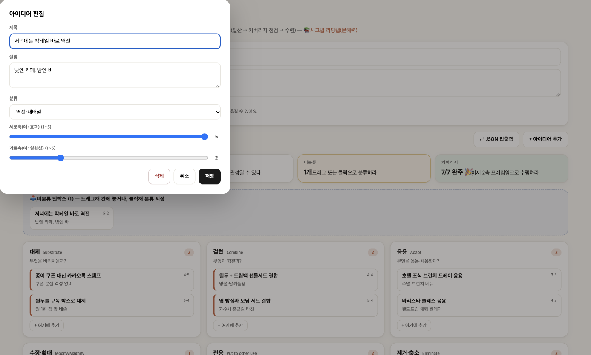
아이디어 편집 창. 분류를 ‘역전·재배열’로 지정하면 인박스에서 해당 칸으로 이동합니다.
STEP 3 · 커버리지 점검
빈 칸이 없어질 때까지 한 번 더
상단의 현황 카드가 지금 상태를 알려줍니다.
아이디어 14개
최다 칸 역전·재배열 (3)
발상이 몰린 관점 — 관성일 수 있다
커버리지 7/7 완주 🎉
이제 2축 프레임워크로 수렴하라
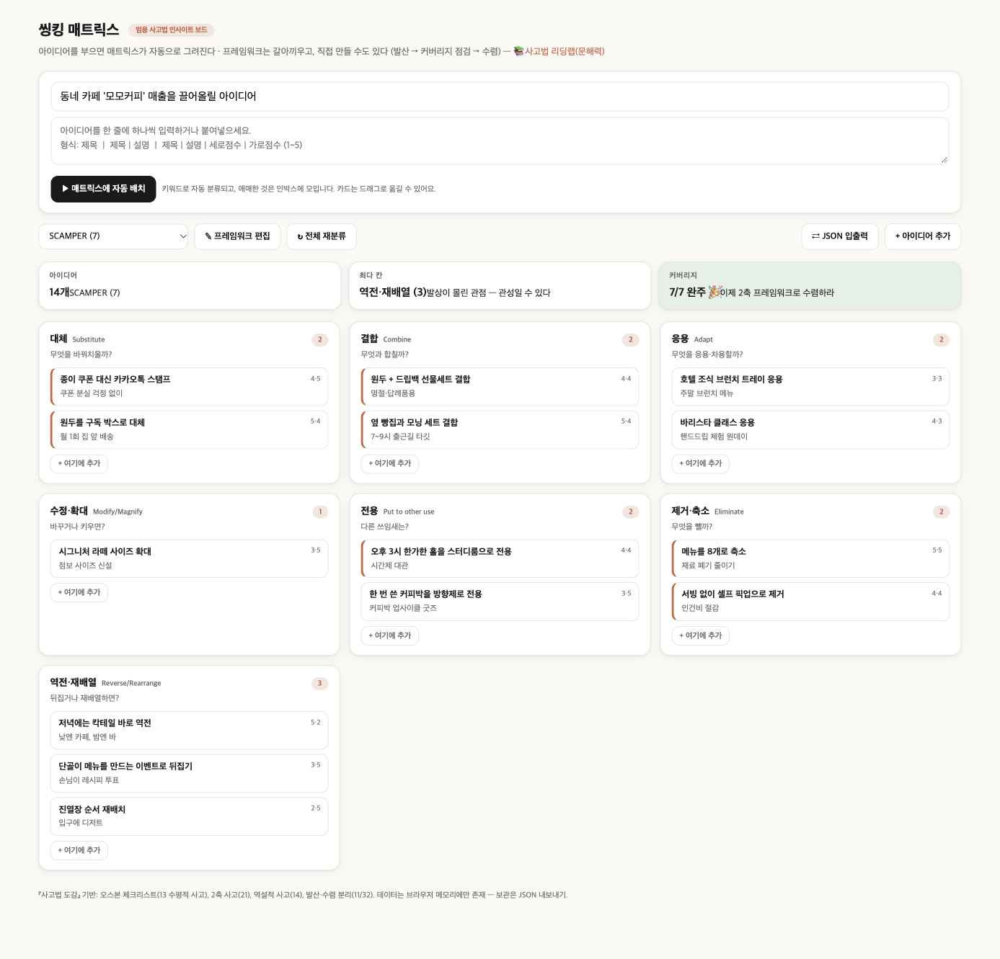
7칸 모두 채운 완성 보드. 칸마다 2~3개씩 고르게 분포. 클릭하면 크게 볼 수 있어요.
📊 ‘최다 칸’은 경고등
한 칸에 몰렸다면 습관적으로 그 방향만 생각했다는 뜻. 비어 있거나 얕은 칸의 + 여기에 추가를 눌러 한 개씩 더 채워보세요.
🏁 ‘7/7 완주’가 신호탄
모든 렌즈를 한 번씩 돌았다는 의미. 이제 발산을 멈추고 수렴할 차례입니다.
STEP 4 · 수렴
14개 중 이번 달에 할 3개 고르기
드롭다운에서 틀을 ‘2축: 효과 × 실현 가능성’으로 바꾸면, 같은 카드가 점수 위치대로 우선순위 지도에 다시 놓입니다. 카드를 새로 쓸 필요 없어요.
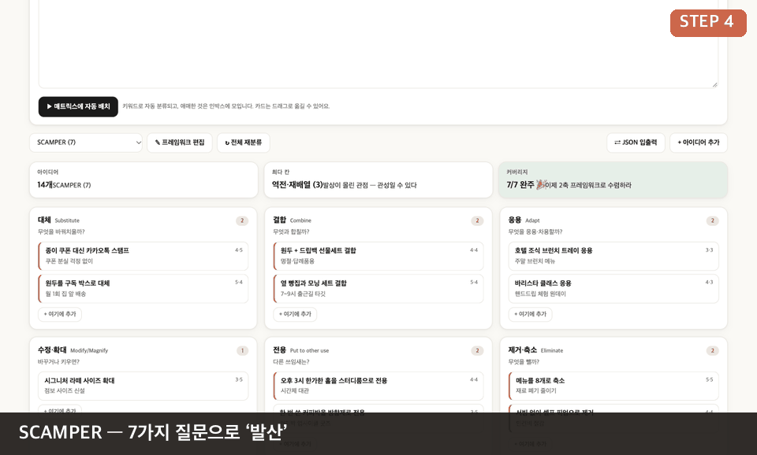
▲ 같은 14개 카드를 4가지 틀로 바꿔 보는 장면 (실제 화면 캡처 프레임)
우리 가게 아이디어 지도 (14개 한눈에)
※ 위 점 위치는 모모커피 사장님이 매긴 예시 점수(효과·실현성 1~5)로 그렸습니다. 같은 점수는 살짝 겹치지 않게 흩어 표시했어요.
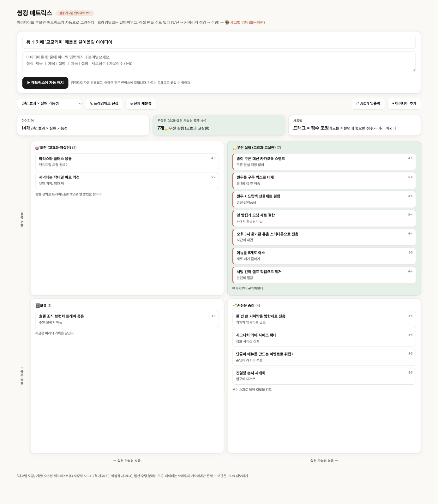
실제 화면의 2축 보드. 4개 구역: ⭐우선 실행(효과·실현 둘 다 4+, 7개) · 🎯도전(고효과·저실현) · 🌱손쉬운 승리 · 🗄보류
고르는 법 — 딱 3원칙
① ⭐ 우선 실행에서 2개
“여기서부터 구체화한다.” 이번 달 안에 시작할 수 있는 것.
② 🌱 손쉬운 승리에서 1개
진열 순서 바꾸기처럼 돈 안 드는 것. 첫 성공 경험용.
③ 🎯 도전은 ‘쪼개서’
“실현 장벽을 트레이드온으로 깰 방법을 찾아라.” 칵테일 바 → 금요일 하루만 시범.
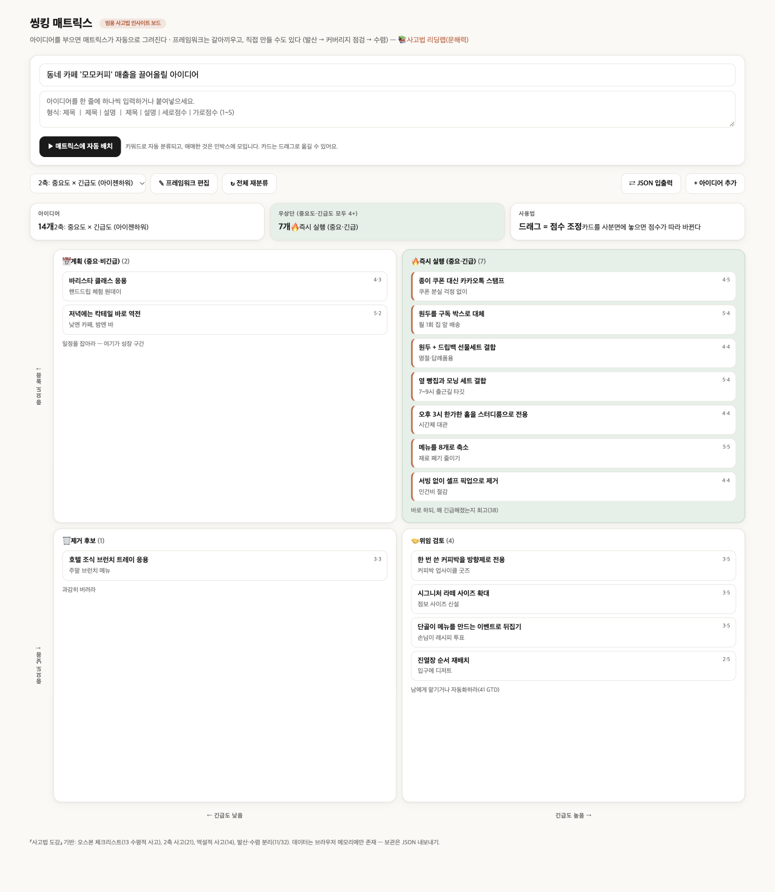
중요도 × 긴급도. “오늘 할 것”과 “미룰 것”을 가를 때
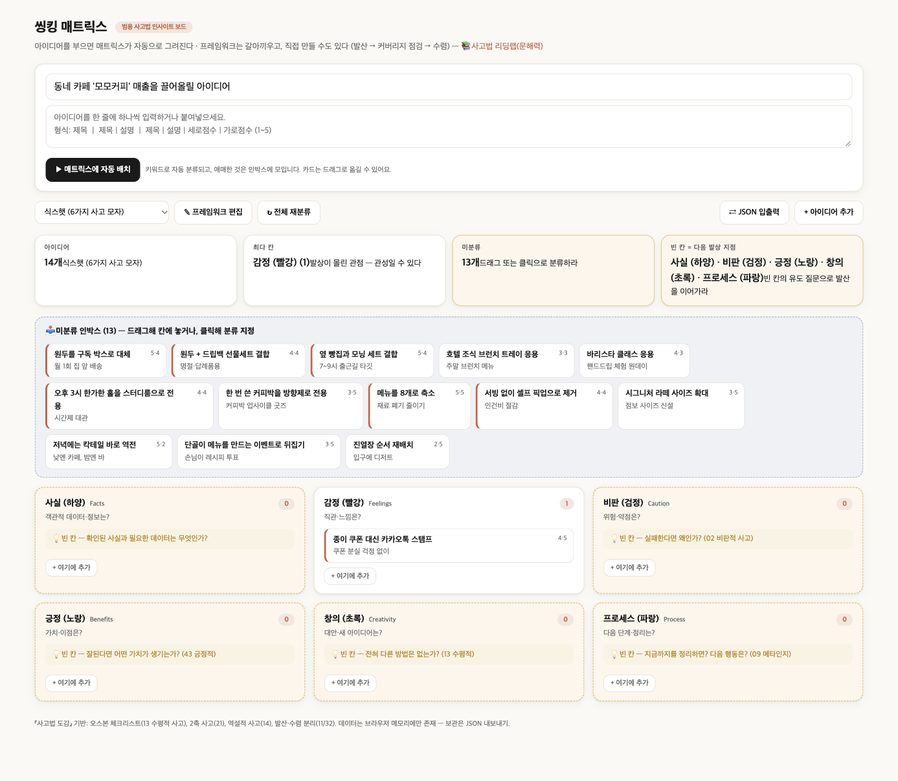
식스햇. 낙관·비관·감정 등 6관점으로 점검할 때
CHAPTER 7 · 우리 가게에 적용
업종이 달라도 질문은 같다
같은 7칸에 가게만 바꿔 넣어 봤습니다. 업종을 눌러 실제 보드를 확인하세요. (모두 가상 사례)
공통 패턴 발견! 업종이 달라도 P(전용)에서는 ‘이미 있는 자원(시든 꽃·남는 나물·빈 의자·빈 교실·남는 육수)’을 돈으로 바꿨습니다. 새 투자 없이 시작할 수 있어서 소상공인에게 가장 현실적인 렌즈예요. 반대로 S(대체)는 대부분 ‘예약·주문·결제 디지털화’로 모였습니다.
CHAPTER 8 · 치트시트
렌즈 × 업종 질문 모음
막힐 때 가게 유형에 맞는 질문을 그대로 복사해서 첫 줄로 쓰세요.
음식점·카페
미용·서비스
소매·판매
S 대체
종이 쿠폰·전화 주문을 무엇으로 바꿀까?
전화 예약·현금 결제를 무엇으로 바꿀까?
현장 판매를 어떤 채널로 바꿀까?
C 결합
옆 가게와 묶은 세트는?
다른 업종 샵과 제휴 패키지는?
상품 + 체험/키트 결합은?
A 응용
호텔·편의점은 어떻게 팔지?
피트니스 횟수권을 응용하면?
편집숍 큐레이션을 응용하면?
M 수정·확대
크기·포장·가격대를 바꾸면?
시술 시간·메뉴를 줄이면?
대용량·소포장 상품은?
P 전용
한가한 시간·남는 재료의 다른 쓰임은?
빈 의자·빈 시간의 다른 쓰임은?
매장 공간·재고의 다른 쓰임은?
E 제거·축소
안 팔리는 메뉴·서빙 과정을 없애면?
상담·메뉴 가짓수를 줄이면?
포장·진열 단계를 없애면?
R 역전·재배열
영업 시간·손님 역할을 뒤집으면?
시간대·예약 방식을 뒤집으면?
체험→구매 순서를 뒤집으면?
CHAPTER 9 · 저장
⚠️ 새로고침하면 사라집니다
이 보드는 브라우저 메모리에만 저장됩니다. (화면 하단에도 “데이터는 브라우저 메모리에만 존재 — 보관은 JSON 내보내기”라고 적혀 있어요.) 창을 닫기 전에 꼭 내보내세요.
1
⇄ JSON 입출력 버튼 클릭
2
복사 또는 파일로 저장 → 메모장·노션·카톡 ‘나에게 보내기’에 보관
3
다음에 열면 같은 창에 붙여넣고 불러오기 → 보드가 그대로 복원
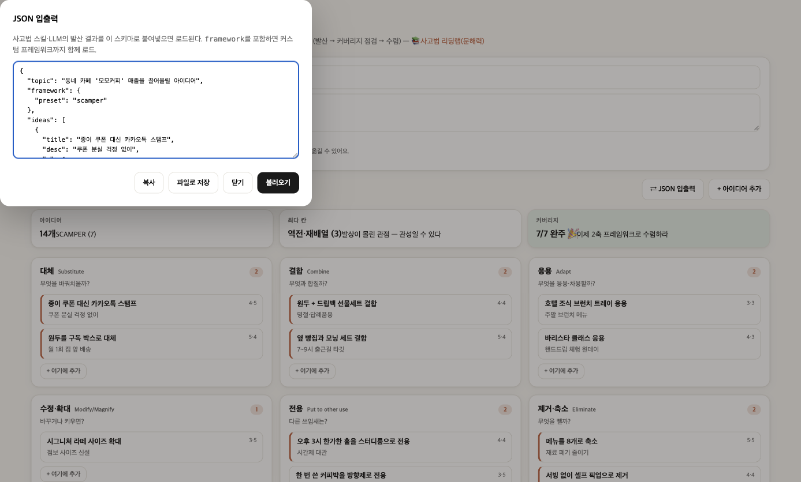
JSON 입출력 창. ChatGPT·Claude 같은 AI에게 “SCAMPER 7칸으로 아이디어 20개 뽑아서 이 JSON 형식으로 써줘”라고 하면 그 결과를 이 창에 붙여넣어 불러올 수도 있습니다.
{
"topic": "동네 카페 매출 올리기",
"framework": { "preset": "scamper" },
"ideas": [
{ "title": "종이 쿠폰 대신 카카오톡 스탬프",
"desc": "쿠폰 분실 걱정 없이",
"cat": "s", "y": 4, "x": 5 }
]
}
// cat: s 대체 · c 결합 · a 응용 · m 수정·확대 · p 전용 · e 제거·축소 · r 역전·재배열
🤖 AI와 함께 쓰는 법: 내가 7~8개를 쓰고, AI에게 “내 가게(업종·위치·고객)는 ○○야. 비어 있는 렌즈 칸의 아이디어를 칸마다 2개씩 더 제안해줘”라고 시키면 빈 칸이 금방 채워집니다. 다만 AI가 준 아이디어는 사장님이 점수를 직접 매겨야 진짜 내 것이 됩니다.
CHAPTER 10 · 실행
오늘부터 7일 플랜
체크하면 진행률이 올라갑니다. (이 브라우저에만 저장돼요)
0 / 7 완료
기억할 한 문장 아이디어는 많이 → 고르게 → 줄여서. 발산할 땐 평가하지 말고, 수렴할 땐 점수만 보세요. 이 순서를 바꾸지 않는 것이 SCAMPER 매트릭스의 전부입니다.